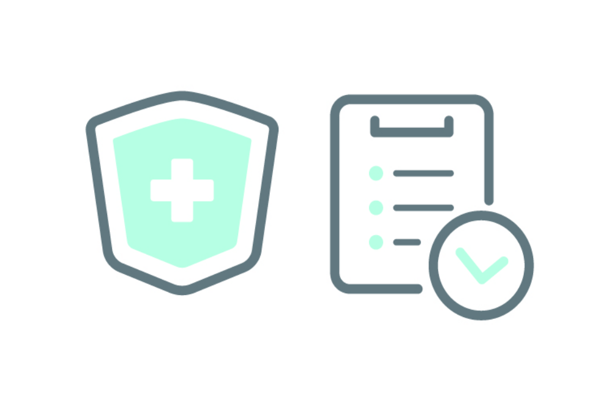

診 療 に つ い て
保 険 診 療 の 場 合

初診時には、問診と診察後、負傷部説明と治療方法をご提案いたします。
各々に症状に適応する具体的な初回処置を行います。
次回以降は、必要に応じた後療処置と電気療法、罨法（あんぽう）・手技治療等を開始します。
回復期には運動療法等のいわゆるリハビリ処置を行います。
又、すべての時期に適切なアドバイスを心がけています。
※予約優先制
診 療 時 間
| 月 | 火 | 水 | 木 | 金 | 土 | 日 | |
|---|---|---|---|---|---|---|---|
| 午 前 8:30～12:00 |
〇 | 〇 | 〇 | × | 〇 | 〇 |
× |
| 午 後 15:00～18:30 |
〇 | 〇 | 〇 | × | 〇 | × | × |
※受付は、終了１５分前までにお願いします。
保 険 診 療 の 予 約 に つ い て
予約優先制 (土)予約制
初診の方でも予約可能です。
お電話（045-893-2349）又は、公式LINE にて受付けます。
にて受付けます。
ア ス リ ー ト の た め に
院長・副院長ともにスポーツ経験者です。
基本的にスポーツ好きなこともあって、色々なスポーツに於けるトラブル回復にお手伝いできると思います。
選手各々の「ケガ」そのものとメンタリティー、再発予防のテーピング、リハビリ方法も含め、負傷選手の立場に立った目線でのアドバイスを常に心がけています。
特に負傷選手の多くが長期にわたり練習を休めない環境内での治療方法、又、回復期においての練習量と制限方法の具体化に注意を置いています。
保 険 診 療 料 金 目 安
| 初 診 | ２ 回 目 以 降 | |
|---|---|---|
| ３ 割 負 担 | 1,500円～ | 1,200円～ |
| ２ 割 負 担 | 890円～ | 590円～ |
| １ 割 負 担 | 690円～ | 390円～ |
保 険 診 療 の オ プ シ ョ ン
10分単位で延長可能
10分 1,100円
20分 2,200円
30分 3,300円
治療機器使用 ＋500円
自 由 診 療 の 場 合 （保険証を使用しない、時間が取れず１回で内容の濃い施術を受けたい方）
整体・マッサージ・足裏のトラブル・各種リハビリ、姿勢改善等の治療
産前・産後の不調は産後ケアのページをご覧ください。
こちらは、患者皆様のお悩みが多種多様のため、治療内容もケースバイケースと成りますが、ご希望に沿った治療をご提案していきます。
※保険外診療は100%実費ですが、半面、現在他の病院等に保険診療で通院中であっても治療可能です。重複診療になることは有りません。
初回のみカウンセリング・登録料 2,000円
20分～ 2800円～[20分間のマッサージ ＋ １５分間の電気治療]
10分毎 延長 1,100円
ストレッチ 300円
ラクシア 250円 （両足のエアーマッサージ 15分）
※予約優先制
そ の 他
ダイエットコース 講座全５回 10,000円 １講座30分～40分程度
トレーニング・ストレッチ・マッサージと併用可能
分析チャートで原因等を見つけ、ダイエットの正しい知識をつける
※予約制
出張します！
エリア1→500円 (西連合)上之、犬山、コートハウス、西ヶ谷、亀井、尾月、桂台東
エリア2→800円 (東連合)ﾈｵﾎﾟﾘｽ、庄戸、みどりが丘、長倉、上郷、桂台北・中・南1・2丁目
他エリアはお問い合わせください[1,000円～]
トレーニング・ストレッチの詳細はトレーニングのページをご覧ください。
ご希望により、体操教室等も開講できます。詳しくはお問い合わせください。
お 申 込 み
お電話（045-893-2349）又は、公式LINE からお申込みください。
からお申込みください。